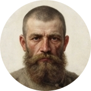

- -, - лет
-
❤️ 50
·
🪙 20
·
🏅 10
Слово смерда. Кровь на снегу
0%
Как имя твоё, отрок?
-
Сможешь ли ты прожить четверть века в русской деревне XIV века? Каждый твой выбор — целый год жизни: от сева и суда общины до мора и княжьего гнева.